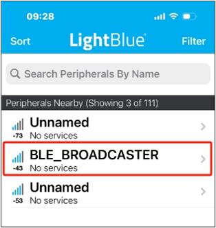

LE Broadcaster
ble_observer 示例工程可以作为开发基于 Broadcaster 角色的 APP 的框架。
Broadcaster 角色特征：
可以发送不可连接广播。
不能创建连线。
环境需求
该示例支持以下开发工具包:
Hardware Platforms |
Board Name |
|---|---|
RTL87x2G HDK |
RTL87x2G EVB |
为快速搭建起开发环境，可参考 快速入门 中提供的详细指导。
硬件连线
配置
配置选项
该示例工程全部配置选项在
samples\bluetooth\ble_broadcaster\src\app_flags.h 中，
开发者可以根据实际需求配置。
/** @brief Config DLPS: 0-Disable DLPS, 1-Enable DLPS */
#define F_BT_DLPS_EN 1
/** @} */ /* End of group BROADCASTER_Config */
编译和下载
该示例可以在 SDK 文件夹中找到:
Project file: samples\bluetooth\ble_broadcaster\proj\rtl87x2g\mdk
Project file: samples\bluetooth\ble_broadcaster\proj\rtl87x2g\gcc
编译和运行该示例请遵循以下步骤:
打开项目文件。
要编译目标文件, 请参考 快速入门 的 编译 APP Image 中列出的步骤。
编译成功后，目录
samples\bluetooth\ble_broadcaster\proj\rtl87x2g\mdk\bin下会生成 APP bin 文件app_MP_sdk_xxx.bin。在 EVB 上按下 reset 键，程序将开始运行。
测试验证
将示例工程烧录到 EVB 后，开发者可以使用另一个运行 LE Observer 工程的开发板或者装有 LightBlue 之类 LE 应用的手机来进行测试。
与另一块开发板对测
请参考 LE Observer 中的 与另一块开发板对测 章节。
与手机对测
按 DUT 上的 reset 按钮， DUT 将开始发送不可连接的非定向广播。
如果成功启动广播，会打印下面的 Debug Analyzer 日志。 如果没有看到下列日志，说明广播启动失败。请检查软件和硬件环境 是否配置正确。
[APP] !**GAP adv start
在 iOS 设备上打开
LightBlue搜索 DUT, 如图所示:
与 iOS 设备对测
开发者只能在手机端进行 scan 操作，因为 DUT 发送的广播是不可连接的。
{kind=link}
代码介绍
本章的主要目的是帮助开发者熟悉 Broadcaster 角色相关的开发流程。本章将按照以下几个部分进行介绍：
源码路径 中介绍项目目录和源代码文件。
Bluetooth Host 介绍 中介绍了 Bluetooth Host 相关信息。
初始化 中介绍 Broadcaster 相关参数和 Bluetooth Host 初始化。
GAP 消息处理 中介绍 Broadcaster 相关的 GAP 消息处理。
源码路径
工程目录:
samples\bluetooth\ble_broadcaster\proj。源码目录:
samples\bluetooth\ble_broadcaster\src。
ble_broadcaster 示例工程中的源文件当前被分为几个组，如下所示。
└── Project: broadcaster
└── secure_only_app
└── Device includes startup code
├── CMSE Library Non-secure callable library
├── Lib includes all binary symbol files that user application is built on
├── ROM_NS.lib
└── lowerstack.lib
└── rtl87x2g_sdk.lib
└── gap_utils.lib
├── Peripheral includes all peripheral drivers and module code used by the application
├── Profile includes LE profiles or services used by the sample application
└── APP includes the ble_broadcaster user application implementation
├── app_task.c
├── main.c
└── broadcast_app.c
示例工程使用与 bt_host_0_0 匹配的默认 GAP LIB，请参阅文档 Host Image 中的 GAP LIB 的使用方法 以获取更多信息。
Bluetooth Host 介绍
示例工程默认使用 Bluetooth Host image 版本 bt_host_0_0，更多信息可参阅
Host Image。
关于 Bluetooth Host 所支持的蓝牙功能的详细信息，请参阅文件 bin\rtl87x2g\bt_host_image\bt_host_0_0\bt_host_config.h。
初始化
当 EVB 启动并且芯片复位时， main() 函数将被调用，它执行以下初始化函数：
int main(void)
{
board_init();
le_gap_init(0);
gap_lib_init();
app_le_gap_init();
pwr_mgr_init();
task_init();
os_sched_start();
return 0;
}
le_gap_init()用于初始化 GAP 并配置链接个数。app_le_gap_init()用于初始化 GAP 参数，开发者可以自行配置广播参数(可参考 LE Host 中的 Advertising 参数的配置 )。
void app_le_gap_init(void)
{
/* Advertising parameters */
uint8_t adv_evt_type = GAP_ADTYPE_ADV_NONCONN_IND;
uint8_t adv_direct_type = GAP_REMOTE_ADDR_LE_PUBLIC;
uint8_t adv_direct_addr[GAP_BD_ADDR_LEN] = {0};
uint8_t adv_chann_map = GAP_ADVCHAN_ALL;
uint8_t adv_filter_policy = GAP_ADV_FILTER_ANY;
uint16_t adv_int_min = DEFAULT_ADVERTISING_INTERVAL_MIN;
uint16_t adv_int_max = DEFAULT_ADVERTISING_INTERVAL_MIN;
/* Set advertising parameters */
le_adv_set_param(GAP_PARAM_ADV_EVENT_TYPE, sizeof(adv_evt_type), &adv_evt_type);
le_adv_set_param(GAP_PARAM_ADV_DIRECT_ADDR_TYPE, sizeof(adv_direct_type), &adv_direct_type);
le_adv_set_param(GAP_PARAM_ADV_DIRECT_ADDR, sizeof(adv_direct_addr), adv_direct_addr);
le_adv_set_param(GAP_PARAM_ADV_CHANNEL_MAP, sizeof(adv_chann_map), &adv_chann_map);
le_adv_set_param(GAP_PARAM_ADV_FILTER_POLICY, sizeof(adv_filter_policy), &adv_filter_policy);
le_adv_set_param(GAP_PARAM_ADV_INTERVAL_MIN, sizeof(adv_int_min), &adv_int_min);
le_adv_set_param(GAP_PARAM_ADV_INTERVAL_MAX, sizeof(adv_int_max), &adv_int_max);
le_adv_set_param(GAP_PARAM_ADV_DATA, sizeof(adv_data), (void *)adv_data);
le_adv_set_param(GAP_PARAM_SCAN_RSP_DATA, sizeof(scan_rsp_data), (void *)scan_rsp_data);
}
广播模式下的设备应使用不可连接广播发送数据。
因此，参数 adv_evt_type 应该配置为以下类型：
GAP_ADTYPE_ADV_NONCONN_IND。
更多关于 LE GAP 初始化和启动流程的信息可以查阅 LE Host 中的 GAP 参数的初始化。
GAP 消息处理
当 APP 从 Bluetooth Host 接收到 GAP 消息时，函数 app_handle_gap_msg() 会被调用。
更多关于 GAP 消息的信息可以查阅 LE Host 中的 蓝牙状态消息。
void app_handle_gap_msg(T_IO_MSG *p_gap_msg)
{
T_LE_GAP_MSG gap_msg;
memcpy(&gap_msg, &p_gap_msg->u.param, sizeof(p_gap_msg->u.param));
APP_PRINT_TRACE1("app_handle_gap_msg: subtype %d", p_gap_msg->subtype);
switch (p_gap_msg->subtype)
{
case GAP_MSG_LE_DEV_STATE_CHANGE:
{
app_handle_dev_state_evt(gap_msg.msg_data.gap_dev_state_change.new_state,
gap_msg.msg_data.gap_dev_state_change.cause);
}
break;
default:
APP_PRINT_ERROR1("app_handle_gap_msg: unknown subtype %d", p_gap_msg->subtype);
break;
}
}
ble_broadcaster 示例工程会在收到 GAP_INIT_STATE_STACK_READY 时调用 le_adv_start() 来启动广播。
如果 le_adv_start() 返回 true，说明 Bluetooth Host 已经接收了这个命令并准备执行，当这个命令执行完成后，Bluetooth Host 将发送
GAP_ADV_STATE_ADVERTISING 给 app_handle_dev_state_evt()。
当 ble_broadcaster 示例工程在开发板上运行时，设备将发送不可连接广播。
void app_handle_dev_state_evt(T_GAP_DEV_STATE new_state, uint16_t cause)
{
APP_PRINT_INFO3("app_handle_dev_state_evt: init state %d, adv state %d, cause 0x%x",
new_state.gap_init_state, new_state.gap_adv_state, cause);
if (gap_dev_state.gap_init_state != new_state.gap_init_state)
{
if (new_state.gap_init_state == GAP_INIT_STATE_STACK_READY)
{
APP_PRINT_INFO0("GAP stack ready");
/*stack ready*/
le_adv_start();
}
}
if (gap_dev_state.gap_adv_state != new_state.gap_adv_state)
{
if (new_state.gap_adv_state == GAP_ADV_STATE_IDLE)
{
APP_PRINT_INFO0("GAP adv stopped");
}
else if (new_state.gap_adv_state == GAP_ADV_STATE_ADVERTISING)
{
APP_PRINT_INFO0("GAP adv start");
}
}
gap_dev_state = new_state;
}
常见问题
如何修改 Advertising Data 参数？
Advertising data 定义在数组 adv_data 中，开发者可以直接修改数组的内容来修改广播数据。
static uint8_t adv_data[] =
{
/* Flags */
0x02, /* length */
GAP_ADTYPE_FLAGS, /* type="Flags" */
GAP_ADTYPE_FLAGS_BREDR_NOT_SUPPORTED,
/* Local name */
0x10,
GAP_ADTYPE_LOCAL_NAME_COMPLETE,
'B', 'L', 'E', '_', 'B', 'R', 'O', 'A', 'D', 'C', 'A', 'S', 'T', 'E', 'R'
};
See Also
相关 API Reference 请查看：